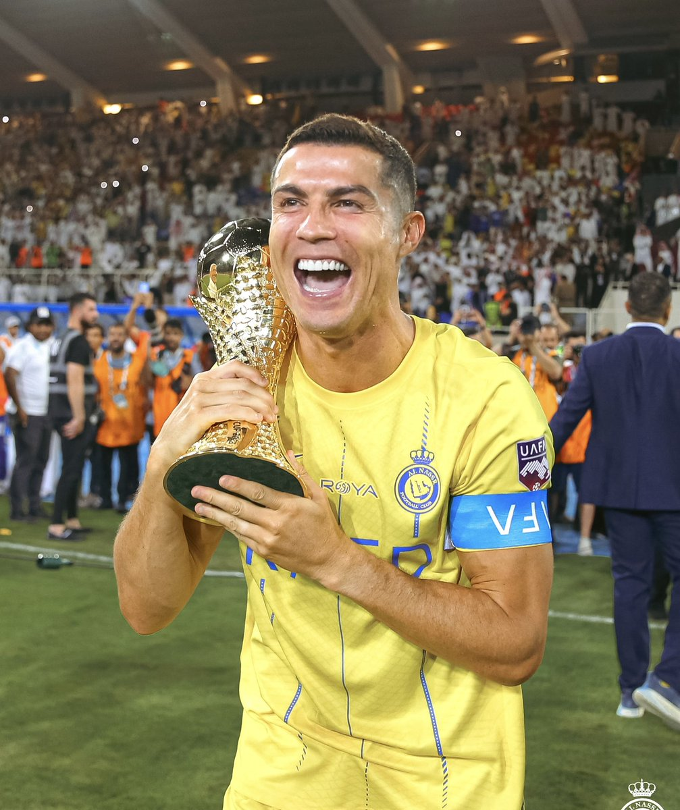

Awards
Cristiano Ronaldo, the Portuguese footballer, has won five Ballon d'Or awards, the most by any European player. He is considered one of the greatest players ever and holds records for the most goals in several competitions, including the UEFA Champions League (140 goals), UEFA European Championship (14 goals) and its qualification stage (40), He Also considered As the "Mr.Champion League" FIFA Club World Cup (7 goals), and the most international goals (135). He also holds records for the most UEFA Champions League goals in a season (17 in 2013-14) and the most national team appearances (217). Ronaldo has scored 917 senior career goals and is among the few players to have played over 1,200 professional matches.He has won 33 senior trophies in his career, along with one youth title and over five from friendly competitions. Cristiano Ronaldo scored brace in final to help Al-Nassr secure the first Arab Club Champions Cup title in the club's history.
Personal Honors
- FIFA Ballon d'Or: 2008, 2013, 2014, 2016 & 2017
- FIFA World Player of the Year: 2008
- The Best FIFA Men's Player: 2016 & 2017
- FIFA Club World Cup Golden Ball: 2016
- Special Young Player of the Year: 2003-04 and 2004-05
- International Federation of Professional Footballers World Player of the Year 2008
- World Soccer World Player of the Year: 2008
- Globe Soccer Awards Best Player of the Year: 2011, 2014, 2016, 2017, 2018, and 2019
- Globe Soccer Awards Player of the Century: 2020
- Onze Mondial Award: 2008 and 2016-17
- Bravo Award: 2004
- Best International Men's Soccer Player: 2018 and 2021
- Golden Foot: 2020
- Best Male Footballer in the World: 2014 and 2016
- Player of the Year: 2016 & 2017
- Union of European Football Associations Men's Player of the Year Award: 2013-14, 2015-16, and 2016-17
- Union of European Football Associations Champions League Forward of the Season: 2016-17 and 2017-18
- UEFA Club Football Awards Club Footballer of the Year: 2008
- UEFA Club Football Awards Club Forward of the Year: 2007 - 08
- International Federation of Football History & Statistics UEFA Best Man Player of the Decade (2011-2020): 2020
- Quina de Oro Awards Best Portuguese Player of All Time: 2015
- PFA Young Player of the Year: 2006-07
- PFA Players' Player of the Year: 2006-07 and 2007-08
- PFA Fans' Player of the Year: 2006-07 and 2007-08
- Football Writers' Association Footballer of the Year: 2006-07 and 2007-08
- Premier League Player of the Season: 2006-07 and 2007-08
- Sir Matt Busby Player of the Year: 2003-04, 2006-07, 2007-08 and 2021-22
- Manchester United Players' Player of the Year: 2006-07 and 2007-08
- Manchester United Player of the Month: Sep 2021, Oct 2021, Mar 2022, Apr 2022 and May 2022
- La Liga Awards Best Player: 2013-14
- La Liga Awards Best Forward: 2013-14
- La Liga Awards Most Valuable Player: 2012-13
- La Liga Player of the Month: Nov 2013, May 2015, and May 2017
- La Liga Player of the Year: 2016
- La Liga Best Striker: 2016
- Marca Trofeo Alfredo Di Stefano: 2011-12, 2012-13, 2013-14, and 2015-16
- Trofeo EFE Best Latin-American player in Spanish football: 2012-13
- Mahou five star player: 2017-18
- Serie A Awards Best Striker: 2020-21
- Serie A Awards Most Valuable Player: 2018-19
- Gran Gala del Calcio Serie A Footballer of the Year: 2019 and 2020
- Serie A Player of the Month: Jan 2020 and Nov 2020
- Lega Serie A Supercoppa Italiana Best Player: 2020
- Juventus MVP of the Year: 2019-20 and 2020-21
- Juventus MVP of the Month: Sep 2018, Nov 2018, Dec 2018, Jan 2019, Mar 2019, Apr 2019, Dec 2019, Jan 2020, Feb 2020, Sep 2020, Nov 2020 and Feb 2021
- Globe Soccer Awards Best Middle East Player: 2023 & 2024
- Saudi Professional League Player of the Month: Feb 2023, Aug 2023, Sep 2023, Dec 2023, Mar 2024 and May 2024
- International Champions Cup Best Player: 2013
- Premier League (Golden Boot): 2007-08
- La Liga (Pichichi Trophy): 2010-11, 2013-14 & 2014-15
- Serie A (Capocannoniere): 2020-21
- Saudi Pro League: 2023-24
- FA Cup: 2004-05
- Supercopa de Espana: 2012
- European Golden Shoe: 2007-08, 2012-13, 2013-14, 2014-15, 2015-16, 2016-17, 2017-18
- IFFHS World's Best Top Goal Scorer: 2011, 2013, 2014, 2015, 2023
- IFFHS World's Best International Goal Scorer: 2013, 2014, 2016, 2017, 2019
- IFFHS World's Best Top Division Goal Scorer: 2013-14, 2014-15, 2020
- FIFA Club World Cup: 2016 & 2017
- UEFA European Championship (Golden Boot/Top Scorer Award): 2012 & 2020
- UEFA European Championship Silver Boot: 2016
- UEFA Nations League Finals: 2019
- UEFA Super Cup: 2014
- Arab Club Champions Cup: 2023
- Globe Soccer Maradona Award: 54
- La Liga Awards Best Goal: 2013-14
- Manchester United Goal of the Season: 2005-06, 2007-08, 2008-09 and 2021-22
- Premier League Goal of the Month: March 2022
- Juventus Goal of the Month: September 2018, October 2018, November 2018, March 2019 and December 2020
- The Best FIFA Football Awards FIFA Puskas Award: 2009
- Globe Soccer Awards Goal of the Year: 2018
- Copa del Rey: 2010-11
- Union of European Football Associations UEFA Goal of the Season: 2017-18
- Union of European Football Associations Champions League Goal of the Season: 2014-15, 2017-18 and 2018-19
- Union of European Football Associations Champions League Goal of the Quarter-finals: 2016-17
- Union of European Football Associations Champions League Goal of the Semi-finals: 2016-17
- Champions League Goal of the Season: 2019-20
- Nations League Finals Goal of the Tournament: 2019
- France Football Ballon d'Or Dream Team: 2020
- France Football Fans' Ballon d'Or Dream Team: 2020
- Union of European Football Associations Team of the Year: 2004, 2007, 2008, 2009, 2010, 2011, 2012, 2013, 2014, 2015, 2016, 2017, 2018, 2019, and 2020
- Union of European Football Associations Ultimate Team of the Year: 2019
- Union of European Football Associations Champions League Squad of the Season: 2013-14, 2014-15, 2015-16, 2016-17, 2017-18, and 2018-19
- Union of European Football Associations European Championship Team of the Tournament: 2004, 2012, and 2016
- Union of European Football Associations Euro All Time XI: 2016
- Union of European Football Associations Nations League Finals Team of the Tournament: 2019
- Union of European Football Associations Nations League Finals FedEx Performance Zone Team of the Tournament: 2019
- International Federation of Association Football FIFA FIFPro World11: 2007, 2008, 2009, 2010, 2011, 2012, 2013, 2014, 2015, 2016, 2017, 2018, 2019, 2020, and 2021
- International Federation of Association Football World Cup Fan Dream Team: 2018
- International Federation of Football History & Statistics All-time Men's World Dream Team: 2021
- International Federation of Football History & Statistics All-time Men's UEFA Dream Team: 2021
- International Federation of Football History & Statistics Men's World Team of the Decade (2011-20): 2020
- International Federation of Football History & Statistics Men's UEFA Team of the Decade (2011-20): 2020
- International Federation of Football History & Statistics Men's World Team: 2017, 2018, 2019, 2020 and 2021
- International Federation of Football History & Statistics Men's UEFA Team: 2020
- European Sports Media Team of the Season: 2006-07, 2007-08, 2010-11, 2011-12, 2012-13, 2013-14, 2014-15, 2016-17 & 2018-19
- Diario AS 11 LeyendAS: 2021
- Sports Illustrated Team of the Decade: 2000s & 2010s
- France Football Team of the Decade: 2010s
- L'Equipe Team of the Year: 2007, 2008, 2011, 2012, 2013, 2014, 2016, 2017, 2018, 2019, and 2020
- FIFA Team of the Year: 2008, 2009, 2010, 2011, 2012, 2013, 2014, 2015, 2016, 2017, 2018, 2019 & 2020
- La Liga Awards Team of the Season :2013-16
- Union of European Football Associations La Liga Team of The Season: 2015-17
- Professional Footballers' Association Team of the Year: 2005-06 FA Premier League, 2006-07 FA Premier League, 2007-08 Premier League, and 2008-09 Premier League, 2021-22 Premier League
- Premier League 20 Seasons Awards Fantasy Team: 2012
- Globe Soccer Awards Maradona Award: 2023
- Globe Soccer Awards Best Middle East Player: 2023 & 2024
- Gran Gala del Calcio Serie A Team of the Year: 2018-19, 2019-20 & 2020-21
- Globos de Ouro Portuguese Sportsman of the Year: 2011, 2012, 2014, 2015, 2016, 2017, 2018, and 2019
- Globos de Ouro Portuguese Footballer of the Year: 2007, 2008, 2009
- Portuguese Football Federation Portuguese Player of the Year: 2015, 2016, 2017, 2018 and 2019
- Portuguese Football Federation Highest scorer ever for Portugal: 2022 & 2024
- CNID Best Portuguese Athlete Abroad: 2007, 2008, 2009, 2011, 2012, 2013, 2015, 2016, 2017, and 2018
- BBC Sports Personality of the Year World Sport Star of the Year: 2014
- ESPY Awards Best International Athlete: 2014, 2016, 2018 & 2021
- Eurosport World Star of the Year: 2016
- Polish Press Agency European Sportsperson of the Year: 2016 & 2017
- The Best FIFA Football Awards FIFA Special Award for an Outstanding Career Achievement: 2021
- Union of European Football Associations Special Award of UEFA Champions League All-Time Top Scorer: 2024
- Globe Soccer Awards Greatest Media Attraction: 2011
- Globe Soccer Awards Fans' Favorite Player: 2013, 2014, 2023
- Globe Soccer Awards Goodwill Award: 2016
- Globe Soccer Awards Globe Soccer 433 Fans' Award: 2018
- Globe Soccer Awards Top Goal Scorer of All-Time: 2021, 2024
- Sanitas Healthiest Real Madrid player: 2014-15 and 2015-16
- La Liga Awards Fans' Five Star Player: 2014-15
- Marca Marca Leyenda: 2019


Collective Honors
Sporting CP(2002-2003)
- Supertaca Candido de Oliveira: 2002
Manchester United (2003-2009)&(2021-2022)

- Premier League: 2006-07, 2007-08, 2008-09
- FA Cup: 2003-04
- Football League Cup: 2005-06, 2008-09
- FA Community Shield: 2007
- UEFA Champions League: 2007-08
- FIFA Club World Cup: 2008
Real Madrid (2009-2018)
- UEFA Champions League: 2013-14, 2015-16, 2016-17, 2017-18
- La Liga: 2011-12, 2016-17
- Copa del Rey: 2010-11, 2013-14
- Supercopa de Espana: 2012, 2017
- UEFA Super Cup: 2014, 2017
- FIFA Club World Cup: 2014, 2016, 2017
Juventus(2018-2021)

- Serie A: 2018-19, 2019-20
- Supercoppa Italiana: 2018, 2020
- Coppa Italia: 2020-21
Al- Nassr (2023-2026)
- Arab Club Champions Cup: 2023
Portugal(National Team)

- UEFA European Championship: 2016
- UEFA Nations League: 2018-19
Career Milestones
- Most FIFA World Cups scored in:5
- Most goals scored in all official senior competitions:920+
- Most goals scored after turning 30: 454
- Most men's international caps: 217 caps
- Most men's international goals scored: 135
- Most goals scored in the FIFA Club World Cup:7
- First male player to score ten international hat-tricks
- Most international (club or country) goals scored in a calendar year:32
- Only player to win the league title, domestic cup, domestic supercup, Champions League, Club World Cup, league player of the year, Golden Shoe and Ballon d'Or at two clubs (Manchester United and Real Madrid)
- Oldest player to score hat-trick at FIFA World Cup: 33 years, 130 days
- Only player to score more than 50 goals in seven consecutive season
- First player to score in consecutive FIFA Club World Cup Finals
- First player to score in ten, eleven, and twelve consecutive international tournaments
- Most hat-tricks for national team: 10
- Most different national teams scored against: 48
- First player to finish as top scorer in first tier national leagues: 4
- Most penalty kick goals (excluding shoot-outs): 171
- Most headed goals: 151
- Most matches won by a player: 829
- Most matches unbeaten by a player: 1065
- Most appearances in all UEFA club competitions: 197
- First player to reach 100 career wins in UEFA Champions League
- Most career wins by an individual in UEFA Champions League/European Cup: 115
- First player to reach 100 career goals in European club competitions
- First player to reach 100 career goals in the UEFA Champions League
- First player to reach 100 career goals for a single club in the UEFA Champions League
- Most goals scored in European club competitions: 145
- Most appearances in the UEFA Champions League: 183
- Most goals scored in the UEFA Champions League: 140
- Most goals in a UEFA Champions League/European Cup season: 17
- Most goals in group stage of UEFA Champions League season: 11
- Most goals in UEFA Champions League knockout: 67
- Most UEFA Champions League goals in a calendar year: 19
- Most goals from penalty kicks in UEFA Champions League history: 19
- Most goals from direct free kicks in UEFA Champions League history: 12
- First and only player to score 15 or more UEFA Champions League goals in three seasons
- First player to score a hat-trick in consecutive Champions League knockout matches
- First player to score in all six group stage matches in the UEFA Champions League in a season
- First and only player in the history of UEFA Champions League to score three hat-tricks in a single season
- First and only player to finish UEFA Champions League top scorer in six consecutive seasons (from 2012-13 to 2017-18) and in seven seasons overall
- Most goals in UEFA Champions League quarter-finals: 25
- Most goals in UEFA Champions League semi-finals: 13
- First and only player to score in three UEFA Champions League era Finals: in 2008, 2014, and 2017
- First and only player to score ten goals against a single opponent (Juventus) in the UEFA Champions League
- Most consecutive UEFA Champions League matches scored in: 11
- Most UEFA Champions League hat-tricks scored by 30+ player: 6
- First player to have won the European Golden Shoe in different leagues: English Premier League (2007-08) and Spanish La Liga (2010-11, 2013-14, 2014-15)
- First player to finish as top scorer in Premier League, La Liga, Serie A and Saudi Pro League
- Most appearances at UEFA European Championship finals tournaments: 30
- Most appearances in UEFA European Championship competition (including qualifying): 68
- Most goals scored in the UEFA European Championship, including qualifiers: 55
- Most career goals at UEFA European Championship finals tournaments: 14
- Most career goals in UEFA European Championship qualifiers: 41
- Most assists at UEFA European Championship finals tournaments:7
- First player to have played at six UEFA European Championship finals tournaments
- First and only player to have scored three or above (goals) at more than one UEFA European Championship finals tournaments: in 2012, 2016, and 2020
- Most headed goals at UEFA European Championship finals tournaments:5
- First player to appear in three UEFA European Championship semi-finals: 2004, 2012, and 2016
- Most successful kicks penalty shoot-outs at UEFA European Championship finals tournaments:4
- Most Man of the Match awards at the UEFA European Championship:6
- Most goals scored in UEFA European Championship and European FIFA World Cup qualifiers:64
- First player to ever score ten goals in four, five, six and seven consecutive UEFA Champions League seasons: from 2011-12 to 2017-18
- First player to score for two winning teams in the UEFA Champions League/European Cup: Manchester United (2007-08) and Real Madrid (2013-14)
- Most UEFA Team of the Year appearances: 15
- Most consecutive appearances in the UEFA Team of the Year:14
- First player to appear in more than one position in the UEFA Team of the Year
- Fastest player to score 350 goals for one club: 335 matches
- Most UEFA Best Player in Europe Award and UEFA Club Footballer of the Year awards: 4
- First player aged 21 or under to score at least twice in three consecutive Premier League appearances
- Most goals scored from penalty kicks in La Liga history: 61
- Fastest La Liga player to score 150 league goals: 140 matches
- Fastest La Liga player to score 200 league goals: 178 matches
- Fastest La Liga player to score 300 league goals: 286 matches
- Most goals scored in Madrid Derby matches: 22
- First player to score in six consecutive Clasicos
- Fastest footballer to reach 15 league goals in one La Liga season: 8 rounds
- Fastest footballer to reach 20 league goals in one La Liga season: 12 rounds
- Only player to reach 30 goals in six consecutive La Liga seasons
- Most teams scored against in a La Liga season: 19
- Most La Liga hat-tricks in a season: 8 hat-tricks
- Most consecutive away matches with at least one goal scored in a single Serie A season
- First player to score in seven consecutive away matches in a debut Serie A season
- Most consecutive Serie A matches scored in: 11
- Most goals scored in a single Saudi Pro League season: 35
- Most international caps as captain: 153 caps
- Most recorded assists for the Portugal national team: 36
- Most goals in a calendar year for the Portugal national team: 14
- Most matches played in World Cup finals: 22
- Youngest player to reach 100 caps: 27 years, 8 month & 11 days
- Most goals scored in El Clásico matches: 18
- Greatest Premier League Forward with unbeaten 28 MNF points from 2006- 09 Season